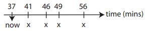
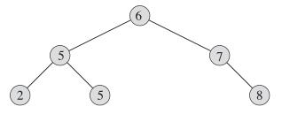

Binary Search Tree
Contents
Binary Search Tree#
引子：Runway Reservation System#
Airpot with a single runway
Reserve req specify “requested landing time” t
Add t to the set if no other landings are scheduled within k minutes.
Remove t from set R after it lands
Example#

Request for time: 44 not allowed (46 ∈ R); 53 OK; 20 not allowed (already past)
Can we do better compared with previous#
Sorted array: a k minute check can be done in O(1) but insertion(shifting) takes O(n).
Min heap: insert in O(lgn) time but k minute check takes O(n) time
Sorted linked list: cant do the binary search.
BST#

Property#
Let x be a node in a binary search tree:
If y is a node in the left subtree of x, then y.key <= x.key.
If y is a node in the right subtree of x, then y.key >= x.key.
Inorder tree walk#
The binary-search-tree property allows us to print out all the keys in sorted order.
preorder tree walk prints the root before the values in either subtree as shown Fig. 1
a postorder tree walk prints the root after the values in its subtrees.)
{kind=link}
Fig. 1 Pseudocode inorder tree walk#
Operations#
find(k), find min(), insert(x), next_larger(x)(successor) and delete().
- find(k): Follow left and right pointers(binary search) until you find it or hit NIL.
- *find min( )*: keep going left until hit NIL
- *insert(x)*: two pointers - prev and current, follow left and right until current hit NIL
- *next_larger(x)*: find_min() if node x has a right subtree, or traverse up-left until reach a node y that is a left child, return y's parent.
- *deletion(x)*: tricky!
- Case 1: x has no children. Just delete it (i.e. change its parent node so that it doesn’t point to
x).
- Case 2: x has one child. Splice out x by linking x’s parent to x’s child.
- Case 3: x has two children. Swap x with x’s successor and splice out x by linking x’s parent to x’s child.
Case 1 and Case 2 can be combined.
**Special case**: Delete the root node
1. create a sentinel node
2. link the sentinel node with root
3. delete self.root
4. reassign sentinel.left to self.root
5. unlink the sentinel node
Code and details Binary Search Tree
Unit_test#
Check representation invariant#
The query operations offered by the data structure are guaranteed to produce the correct result, as long as the representation invariant holds (is true). Update operations are guaranteed to preserve the representation invariant (if the RI holds before the update, it will also hold after the update).